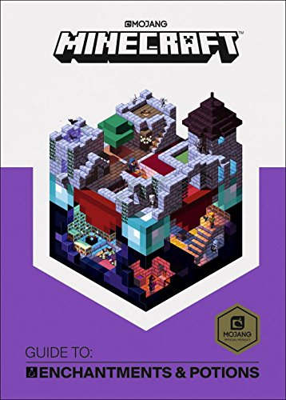

How to Make Potions in Minecraft: A Complete Guide
By: Stefan
Introduction
Minecraft is a game that has captivated millions of players by providing an immersive and expansive virtual world. From building towering castles to digging deep into the earth, the possibilities are endless. One of the most intriguing aspects of the game is the ability to craft potions, which can greatly enhance gameplay and give players an edge in combat.
With this complete guide, we will explore the basics of potion-making in Minecraft. We'll dive into the ingredients and their effects, explain the brewing process, and offer tips for maximizing the effectiveness of your potions. Whether you're a seasoned Minecraft player or a beginner, this guide will provide you with everything you need to know to become a master potion-maker.
We'll cover everything from the mundane to the exotic ingredients that you'll need to concoct your perfect potion, as well as teach you how to set up your own brewing station. We'll explore how potions can boost your abilities, protect you from harm, and even teleport you across the map. We'll also examine the different tiers of potions and what they offer.
Whether you're looking to get a leg up in PvP, or you're just curious about the wonders of potion-making, this guide is for you. With this comprehensive guide, you'll not only learn how to make potions in Minecraft, but you'll also discover new and exciting ways to enjoy this already captivating game.
ad space
Ingredients
Exploring the Magical World of Minecraft Potions: The Essentials Ingredients You Need to Know
The world of Minecraft is full of enchanting potions that can drastically enhance your gaming experience. Whether you’re looking to craft a powerful strength potion, a healing potion, or something more exotic, understanding the basics of potion-making is crucial. One of the most critical aspects of mastering potions in Minecraft is having a solid understanding of the ingredients used in each recipe.
As you dive deeper into the world of Minecraft potions, you’ll realize that there’s an almost endless list of ingredients that you can use to create various concoctions. However, not all ingredients are created equal, and some are more pivotal than others. This article will guide you through the essential ingredients you need to know to master Minecraft Potion-making.
One of the most critical ingredients in any potion recipe is Nether Wart. Nether Wart can only be found in the Nether, and it is the basic ingredient for almost all potions. Another important ingredient is Blaze Powder, which is used to activate the brewing stand and fuel various recipes.
Some of the other essential ingredients you’ll need to know include Redstone Dust (which amplifies the duration of most potions), Spider Eye (which can create a poisonous potion), and Ghast Tears (which are used in healing and regeneration potions). You’ll also need to collect a range of other materials, from ordinary apples to more exotic items like Golden Carrots or Dragon Breaths, to create various custom potion recipes.
In conclusion, understanding the ingredients is crucial for mastering Minecraft potions. With this guide and a little patience, you’ll be well on your way towards creating all kinds of magical mixtures to enhance your Minecraft adventures. So put on your apron, gather your ingredients, and let’s create some powerful Minecraft potions!
ad space
Brewing Process
The Art of Brewing: Exploring the Fascinating World of Minecraft Potions
Minecraft is a game that constantly keeps its players on their toes. Whether you're battling zombies or exploring new biomes, there is always a new challenge to take on. One of the most exciting aspects of Minecraft is the ability to brew potions, which can help you in countless ways throughout the game. From healing effects to increased speed, potions are a tool that no Minecraft player should be without.
The brewing process is a multi-step process that requires patience, planning, and a bit of know-how. In this guide, we will be diving into the world of Minecraft potions, exploring the brewing process, and sharing tips and tricks to help you become a master brewer.
To start brewing potions in Minecraft, you'll need to gather the necessary ingredients and tools. From there, you'll need to follow a specific recipe and process to brew the potion you need.
For example, if you're looking to create a potion of night vision, you'll need to gather ingredients like golden carrots and awkward potions. You'll then need to combine these ingredients in the correct order, add fuel to your brewing stand, and wait for the potion to brew.
Understanding the process behind brewing potions will not only give you an advantage in Minecraft, but it will also add a new level of excitement and depth to your gameplay.
So, what are you waiting for? Grab your brewing stand, gather your ingredients, and start exploring the fascinating world of Minecraft potions. With a little bit of practice, you'll be able to brew powerful potions that will help you take on any challenge that comes your way.
ad space
Potion Types
Delve into the World of Minecraft Potion Types: Creating Magic through the Power of Brewing
Minecraft can be a mystical and magical world, filled with enchanting potions that can give players all sorts of benefits. From sharing them with friends to using them yourselves for an extra boost, potions are a valuable asset in the virtual realm of Minecraft. This complete guide will dive into the world of Minecraft potion types, taking you through what they are, how to make them, and how they can benefit your gameplay.
Minecraft potion types can range from the incredibly useful, such as the potion of healing, to the downright bizarre, such as the potion of nausea. Each potion has its own unique set of effects that can provide an invaluable advantage for gamers, whether they're venture out to battle against witches or explore the unknown depths of caves.
Whether you're interested in mastering the art of potion-making or conducting experiments with different ingredients, this guide will dive into the intricacies of making Minecraft potions. You'll learn about the various reagents required to make potions, such as spider eyes, ghast tears, and nether wart, and discover how they can be combined to create a variety of different potions.
Overall, this guide will provide you with a complete understanding of Minecraft potion types, so that you can create your own unique array of magical brews to aid you in your next Minecraft adventure. So, let's dive into the world of Minecraft potion types and start crafting with the magic of brewing.
ad space
Tips and Tricks
When it comes to Minecraft, there are endless possibilities to create and explore. One of the most popular ways to add some magic into your adventures is with potions. From lasting longer underwater to making yourself invisible, potions can give you a real edge in your gameplay. But how do you make them? This complete guide will break down the process step by step and provide you with some essential tips and tricks to get the most out of your potion-making experience.
Before diving into the recipe, you need to know the basics. First and foremost, you'll need a brewing stand. You can craft one with three cobblestones and one blaze rod. Second, you need bottles, which can be made from three pieces of glass in a v-shape recipe. Finally, you need ingredients. There are three basic ingredients: nether wart, which is used as the base for all potions, and then various other items like spider eyes, glowstone, and gold nuggets to add specific effects.
As you start crafting potions, you'll learn that there are some tricks to making them extra potent. For example, adding glowstone to a potion will increase its effects but shorten its duration, while adding redstone will extend the duration but lower the effects.
Another essential tip is to label your potions. When you have multiple potions, it's easy to get mixed up about which one does what. Naming your potions with descriptive names can save you time and frustration when it comes to using them.
With this complete guide, you'll be brewing masterful potions in no time. So, stock up on ingredients and get started on your magical creations!
ad space
Conclusion
As we come to a close on our journey into the world of potion-making in Minecraft, we can confidently say that the magic of the game is not only found in building extraordinary structures, but also in the ability to brew fascinating concoctions that can aid in our survival and make gameplay more engaging.
Throughout this complete guide, we've explored the fundamental concepts of brewing and provided step-by-step instructions on how to make each and every potion in the game. We've also discussed the importance of understanding the ingredients and their effects when experimenting with potions.
But the world of Minecraft is constantly evolving, and new updates continue to bring exciting features to the game. So, even though we've covered all the potions currently available in the game, there's a chance that more potions and ingredients will be added in the future.
In conclusion, potion-making in Minecraft is a challenging and rewarding experience that requires patience, strategy, and a deep understanding of the game's mechanics. Whether it's to aid in combat, improve speed, or enhance mining abilities, brewing powerful potions is a crucial aspect of gameplay that every Minecraft player should try their hand at.
Thank you for taking the time to read this complete guide on how to make potions in Minecraft. We hope that you've found it informative and helpful. Now, go forth and brew your own magical elixirs!
ad space